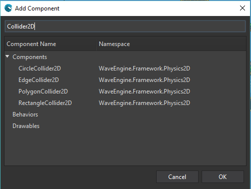

Goal
To know when two different entities collide between them is posible through these Collider2D components (colliders are available also on 3D). Within this recipe we will see how to know when an Entity intersects with another one.
Hands-on
WaveEngine.Framework.Physics3D.Collider2D is the base abstract class for the following built-in colliders:
Every Collider2D requires a Transform2D Component on the Entity, which handles the position in the 2D world, among other things.
With Wave Visual Editor
Using Wave Visual Editor we can add the RectangleCollider2D behavior using the add component button in the Entity Details panel.

With Visual Studio (for Windows or Mac)
The Entity would be built in the following way:
var sprite = new Entity("Sprite")
.AddComponent(new Sprite("Content/Texture.wpk"))
.AddComponent(new SpriteRenderer(DefaultLayers.Alpha))
.AddComponent(new RectangleCollider2D())
.AddComponent(new Transform2D());
Later on, we can call Collider2D.Intersects() to check whether the collision happens:
var collider = sprite.FindComponent<RectangleCollider2D>();
// anotherCollider must be previously added to a different Entity
if (collider.Intersects(anotherCollider))
Debug.WriteLine("The entities collide");
Wrap-up
After seeing the different Collider2D which Wave Engine includes, we have gone through how quickly check whether two entities collide between them.